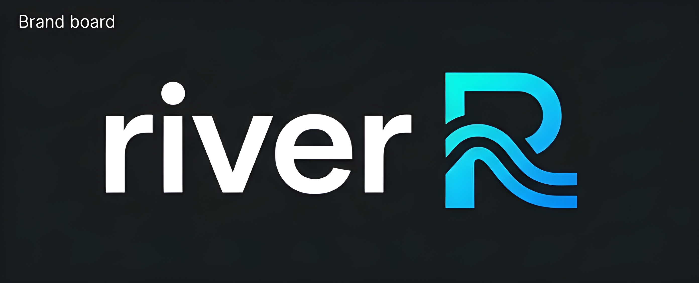

Systems Programming
Rust, Tokio, TCP servers, protocol parsing, concurrency, persistence, and low-level architecture.
RustTokioRESPbincode
Backend and systems developer currently studying physics.
I became a developer before university and now study physics while building backend APIs, database experiments, real-time systems, blockchain programs, and digital products that solve real problems.
I started writing software before university, after discovering web development in secondary school. That early start shaped how I learn: build real things, understand the underlying system, then make it better.
Today I am studying physics while already building software systems across backend APIs, real-time web platforms, Rust experiments, Solana programs, and product-focused applications.
My work sits at the intersection of engineering discipline and builder energy: clean architecture, performance-aware implementation, practical user value, and the patience to understand how systems behave.
A focused stack around backend engineering, systems programming, databases, and modern product delivery.
Rust, Tokio, TCP servers, protocol parsing, concurrency, persistence, and low-level architecture.
Production APIs with authentication, role-based access, queues, caching, docs, and clean REST design.
Relational data models, query design, in-memory storage, Redis-backed workflows, and persistence layers.
Responsive interfaces, full-stack delivery, real-time experiences, and practical products for real users.

Rust database internals
In-memory key-value database inspired by Redis with Tokio TCP networking, RESP-style parsing, TTL expiration, sharded storage, and disk persistence.
Open case studyAI education platform
Multi-platform study application serving past questions and AI-generated practice questions through a scalable Node.js backend.

Production backend API
School management and CBT API with Prisma, PostgreSQL, Redis, BullMQ, JWT auth, RBAC, caching, jobs, and Swagger docs.
I think in modules, boundaries, data flow, failure modes, and long-term maintainability.
I care about latency, resource usage, responsive UI, and systems that stay predictable under load.
I build for real workflows, not demos alone: useful defaults, clear APIs, and polished user paths.